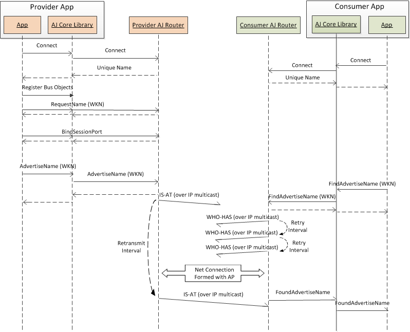
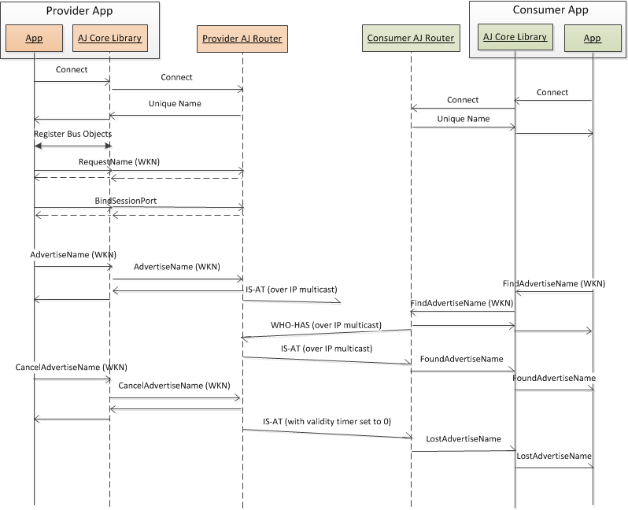
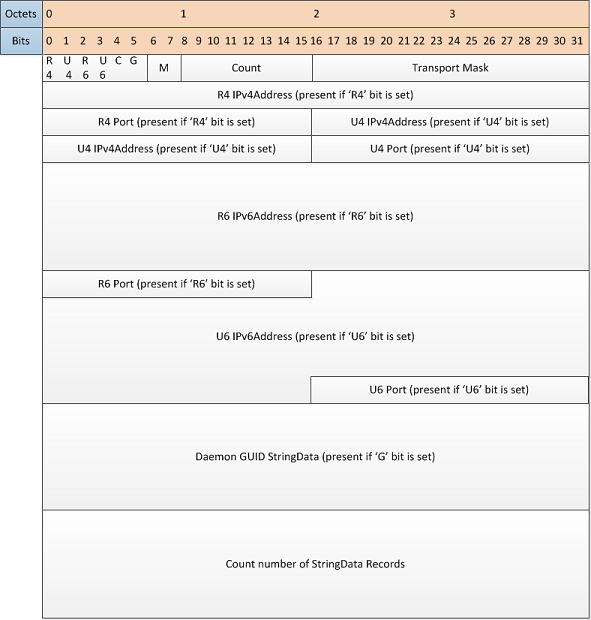
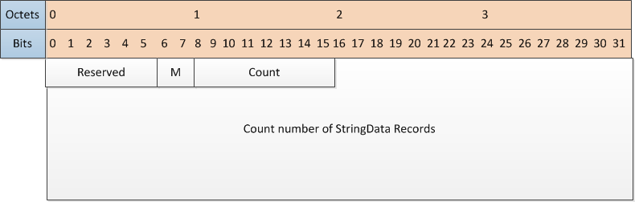
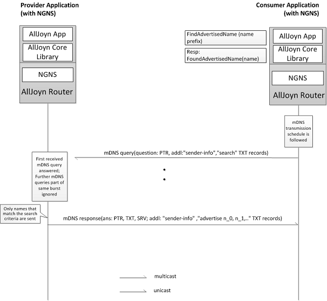
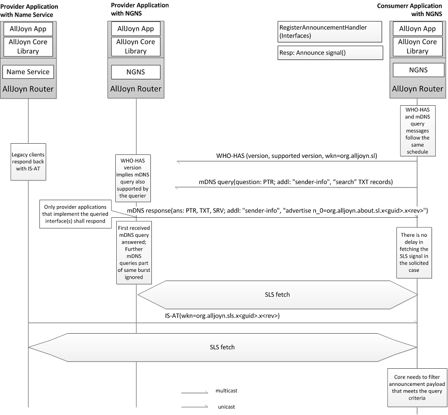
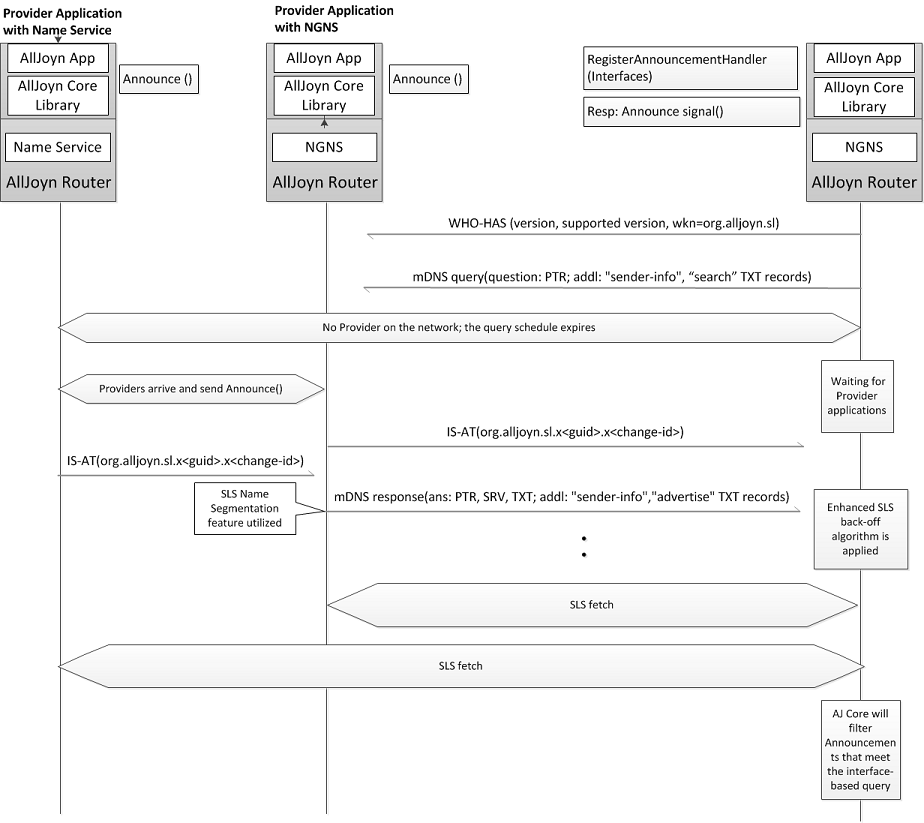
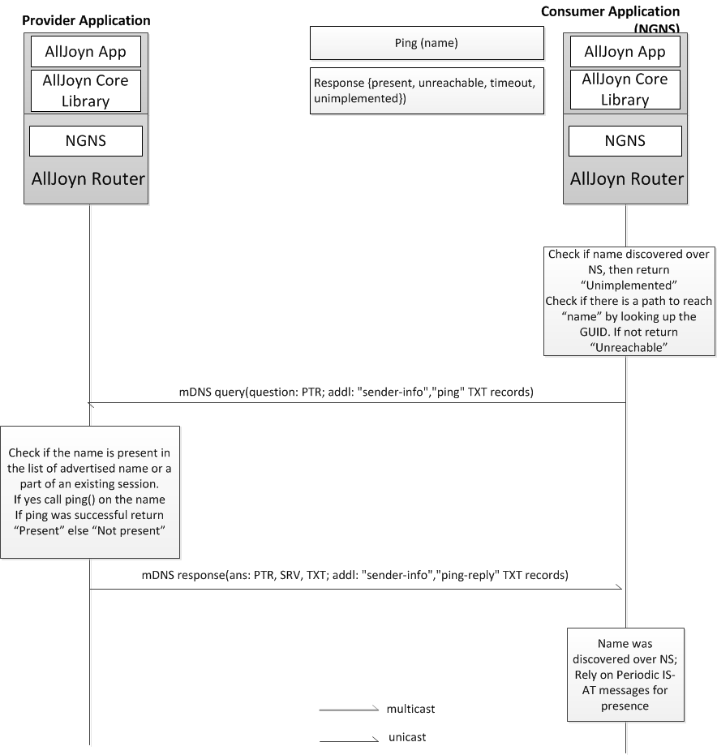

推广和发现
概述
AllJoyn™ 系统支持一种可被提供者用于通过 AllJoyn 网络推广服务，同时也可被消费者用于发现并消费这些服务的机制。AllJoyn 支持跨越多种底层 接入网（例如 Wi-Fi）的发现机制。AllJoyn 发现协议的推广和发现功能使用了通过 Wi-Fi 的 IP 多播。发现机制的细节将会对 AllJoyn 应用程序隐藏。
AllJoyn 路由支持为了使用 IP 传输的 Wi-Fi 的指定传输方式的发现机制。
应用程序可以用下列方法中的一种，实现在 AllJoyn 框架上的推广和发现服务。细节讨论在此章节后面的部分。
- 基于 Name: 服务的推广和发现使用一个 well-known name 或者唯一识别符。
- 基于 Announcement: 服务的推广和发现使用一个 well-known name 或者唯一识别符。
14.06 版本中关于发现功能的增强
AllJoyn 发现功能在 14.06 版本中有所提升，支持了通过一种更为便捷的方法（NGNS，之前定义的）来发现支持一系列接口的的设备/应用程序。 NGNS 支持 基于 m-DNS 的发现协议，可以在一个 over-the-wire 发现消息中指定 AllJoyn 接口。另外，基于 mDNS 的协议可以提供通过单播的发现回应，以提升发现 协议的性能，将 AllJoyn 发现进程中生成的多播交通总流量降至最低。
通过加入一个通过单播发送的明确的基于 mDNS 的 ping() 消息用来判断远端端点是否活动，目前用于 AllJoyn 设备/应用程序的的探测机制已经被加强。此 ping() 机制由基于自身逻辑的应用程序所驱动。
此章节首先描述了 AllJoyn 历史版本的发现机制（14.06版本之前），随后介绍了基于 NGNS 的发现机制以及当前的发现机制，参见 NGNS 消息序列 .
基于 name 的历史版本发现机制
此章节捕捉了14.06版本之前的历史版本中基于 name 的发现机制设计。
AllJoyn 路由支持一个 Name 服务，从而实现了基于 name 的服务发现模式。Name 服务支持一个基于 UDP 的协议，用于完成通过基于 IP 的接入网（包括 Wi-Fi）的发现工作。基于 Name 的发现的 API 通过 AllJoyn 核心库被暴露。
Name 服务支持 IS-AT 和 WHO-HAS 协议消息，在下面会有他们的描述。这些协议消息携带者将会被推广和发现的 well-known names. 协议消息通过 AllJoyn 近端网络（本地子网）被多播，使用了 IANA-registered IP 多播组以及如下所示的端口名 IANA-registered multicast addresses for the AllJoyn framework.
用于 AllJoyn 框架的 IANA-registered 多播地址
| Address | Port |
|---|---|
| IPv4 Multicast group address | 224.0.0.113 |
| IPv6 Multicast group address | FF0X::13A |
| Multicast port number | 9956 |
下图捕捉了基于 name 发现机制的高层结构，展示了 Name 服务生成 IS-AT 和 WHO-HAS 消息的过程。

Figure: 基于 Name 的发现架构
IS-AT
IS-AT 消息通过 well-known name 或者唯一识别符来推广 AllJoyn 服务。一条 IS-AT 消息可以包括包含一个或多个用于推广的 well-known names 或者唯一 识别符的列表。IS-AT 消息通过 Adv_Validity_Period 配置参数为 well-known name 推广指定了一个有效周期。
提供方设备上的 AllJoyn 路由通过 IP 多播周期性地发送 IS-AT 消息，用来推广自己所支持的服务。此周期由提供方上的 Adv_Msg_Retransmit_Interval 可配置参数定义。
IS-AT 消息也可以作为收到的正在寻找服务的 WHO-HAS 消息的回复被发出。借此机制，使用方设备可以被直接提醒，从而最大限度减少了发现过程的时间。
WHO-HAS
WHO-HAS 消息可使用 well-known name 或者唯一识别符发现一个或多个 AllJoyn 服务。与 IS-AT 类似，一条 WHO-HAS 消息也包含带有一个或多个用于发现 的 well-known name 或者唯一识别符。WHO-HAS 消息也可以包含一个 well-known name 前缀（取代复杂的 well-known name），可与 IS-AT 消息中所推广的 well-known name 相匹配。
例如，WHO-HAS 消息中的 well-known name 前缀 "org.alljyon.chat" 可以与 IS-AT 消息中推广的 "org.alljoyn.chat._123456.Joe" well-known name 相匹配。
当使用方设备试图发现一个服务时，他会通过 IP 多播发送出 WHO-HAS 消息。此 WHO-HAS 消息将被重复几次，一定概率上引起 Wi-Fi 网络中 collision 的 出现，从而导致多播包数量的减少。
下列参数决定了 WHO-HAS 消息的传输模式：
- Disc_Msg_Number_Of_Retries
- Disc_Msg_Retry_Interval
在第一次传输后，每一个 Disc_Msg_Retry_Interval 内 WHO-HAS 消息都会被重新发送 Disc_Msg_Number_Of_Retries 次。作为 WHO-HAS 消息的回应，使用方 可以获取一条由提供方发来的推广了被请求的服务的 IS-AT 消息。
使用方行为
下图展示了基于 name 发现机制中使用方 AllJoyn 路由的行为：

Figure: 使用方 AllJoyn 路由发现行为
消息序列
在基于 Name 发现的场景中捕捉了下列用例：
- 在 IP 连接已经建立好时发现
- 不可靠的网络环境下的发现
- IP 连接建立延迟的发现
- IP 连接丢失导致的 WKN 丢失
- 提供方取消推广 well-known name
- 使用方取消发现 well-known name
在 IP 连接已经建立好时发现
下图展示了一个在典型的发现场景中的 AllJoyn 服务 well-known name 的消息序列。在此例中，提供方和使用方设备已经建立了 IP 连接。第一条 WHO-HAS 消息通过 IP 多播已经被传输到提供方设备上，提供方设备随即回复了一条 IS-AT 消息。

Figure: 典型的 well-known name 发现
不可靠的网络环境下的发现
下图展示了在一个底层网络漏掉了一些多播的 WHO-HAS 消息的发现场景中，AllJoyn 服务 well-known name 的消息序列。在这种情况下，WHO-HAS retry 机 制将被触发，消息将根据 Disc_Msg_Number_Of_Retries 和 Disc_Msg_Retry_Interval parameters 两参数来执行重发操作。

Figure: 不可靠的网络环境下的发现
IP 连接建立延迟的发现
下图展示了在使用方发送完 WHO-HAS 消息之后，连接到 AllJoyn 的近端网络 AP 已延迟的场景中，AllJoyn 服务 well-known name 的消息序列。这种情况在 使用方设备刚刚进入一个新的 AllJoyn 近端网络时可能会发生。子网的 IS-AT 消息已经被使用方的 AllJoyn 路由接收到，并导致了被请求 well-known name 的 FoundAdvertiseName.

Figure: IP 连接建立延迟的发现
IP 连接丢失导致的 WKN 丢失。
下图展示了在使用方丢失与 AllJoyn 近端网络热点的 IP 连接所导致的 well-known name 丢失的场景中，AllJoyn 服务 well-known name 的消息序列。在使 用方设备离开 AllJoyn 近端网络时可能会发生这种情况。
如果使用方的 AllJoyn 路由在 Adv_Validity_period 时间内没有收到任何给定 well-known name 的 IS-AT 消息，他将宣布 well-known name 丢失，并生成 一个针对此 well-known name 的 LostAdvertiseName.

Figure: IP 连接丢失导致的 WKN 丢失
提供方取消推广 well-known name
下图展示了在提供方应用程序取消了对之前的一个 well-known name 的推广的场景中，AllJoyn 服务 well-known name 的消息序列。

Figure: 提供方取消推广 well-known name
使用方取消发现 well-known name
下图展示了在使用方应用程序取消了对 well-known name 的发现的场景中，AllJoyn 服务 well-known name 的消息序列。

Figure: 使用方取消发现 well-known name
消息结构
如前所述，Name 服务支持 IS-AT 和 WHO-HAS 消息。这些消息在一个更高层级的 Name 服务消息中被嵌入，将 Name 服务消息可以将 IS-AT 和 WHO-HAS 消息纳入同一个 Name 服务消息中，从而提供了灵活性。当 AllJoyn 应用程序同时作为提供方（推广 well-known name） 和使用方（发现 well-known name）时，这将会非常有用。
下图展示了 Name 服务的消息结构。Name Service message structure fields 定义了消息结构字段。

Figure: Name 服务消息结构
Name 服务消息结构字段
| 字段 | 描述 |
|---|---|
| Sver | 发送端最新实现的 AllJoyn 发现协议的版本。 |
| MVer | Name 服务消息的版本。 |
| QCount | 跟随头文件的 WHO-HAS 问题消息的个数。 |
| ACount | 跟随头文件的 IS-AT 应答消息的个数。 |
| Timer | 计算 (以秒计算) 哪些 IS-AT 应答应被认为有效。 此字段应根据下列参数设定：
|
| 有效。如果此项为0，则指示着发送方的 AllJoyn 路由正在回收此推广。 |
IS-AT 消息
下图展示了 IS-AT 消息的第一版
IS-AT message format version 1 fields 定义了 IS-AT 消息字段。

Figure: IS-AT 消息格式 (版本 1)
IS-AT 消息格式版本 1 字段
| 字段 | 描述 |
|---|---|
| R4 Bit | 如果设置为 '1', R4 bit 指示着将会呈现一个端点使用 IPv4 （IP 地址和端口号）的可靠传输（TCP）. |
| U4 Bit | 如果设置为 '1', U4 bit 指示着将会呈现一个端点使用 IPv4 （IP 地址和端口号）的不可靠传输（UDP）. |
| R6 Bit | 如果设置为 '1', R6 bit 指示着将会呈现一个端点使用 IPv6 （IP 地址和端口号）的可靠传输（TCP）. |
| U6 Bit | 如果设置为 '1', U4 bit 指示着将会呈现一个端点使用 IPv6 （IP 地址和端口号）的不可靠传输（UDP）. |
| C Bit | 如果设置为 '1', C bit 指示着 StringData 记录列表是一个由所有被回应方 AllJoyn 路由输出的 well-known names 构成的完整列表。 |
| G Bit | 如果设置为 '1', G bit 指示着将会呈现一个可变长度的 daemon GUID 字符串。 |
| M | 指示 IS-AT 消息的类型。对于 IS-AT，此项被定义为 '01' (1) 。 |
| Count | IS-AT 消息中所包含的 StringData 项目的个数。 |
| TransportMask | 传送提示符的比特掩码，指示着哪一个 AllJoyn 传输正在执行推送。 |
| StringData | 描述一个正在被推广的 AllJoyn well-known name. |
WHO-HAS 消息
下图展示了 WHO-HAS 消息的第一版
WHO-HAS message format version 1 fields 定义了 WHO-HAS 消息的字段

Figure: WHO-HAS 消息格式 (版本 1)
WHO-HAS 版本 1 消息格式字段
| 字段 | 描述 |
|---|---|
| Reserved | 保留位 |
| M | WHO-HAS 消息的类型。 对于 WHO-HAS 此项被定义为 '10' (2) 。 |
| Count | WHO-HAS 消息中所包含的 StringData 项目的个数。 |
| StringData | 描述使用方 AllJoyn 路由感兴趣的一个 AllJoyn well-known name. |
历史版本的 announcement-based 发现
此章描述了14.06及以前历史版本中关于基于 announcment 的发现的设计。
在基于 announcement 的发现中，提供方设备通过一个 announcment 广播信号来宣布被支持的 AllJoyn 接口。对使用 AllJoyn 服务有兴趣的使用方设备可以 选择接受这些来自提供方的广播 announcement 消息，以发现被支持的 AllJoyn 服务的接口。
Announcment 消息又 About 功能生成，并使用 AllJoyn 路由提供的非会话信号机制（详见 Sessionless Signal）被当作一个 AllJoyn 非会话信号发送。此非会话信号模型使用 AllJoyn name 服务消息（IS-AT 和 WHO-HAS），和为非会话信号指定格式的 well-known names 对使用方 作出有新信号的提醒。一旦使用方的 AllJoyn 路由发现了此非会话信号的 well-known name, 他将会通过 AllJoyn 会话连接到此提供方，并获取提供方设备 的服务宣布消息。
下图展示了基于 announcement 的发现进程的高层结构。

Figure: 基于 announcement 的服务发现结构
Announcement 消息被作为一个非会话信号从提供方应用程序发送到 AllJoyn 路由，并在非会话信号缓存中被缓存。此非会话信号模块会为非会话信号生成一 个特定格式的 well-known name，如下所示（详见Sessionless Signal）：
SLS WKN format: org.alljoyn.sl.x<GUID>.x<change_id>
此非会话信号模块与 Name 服务进行交互，发送给定 well-known name 的 IS-AT 消息。在使用方上的 AllJoyn 路由开始对此 well-known name 进行发现。 根据收到的 IS-AT 消息，在使用方上的非会话信号会通过 AllJoyn 会话连接到提供方的非会话信号模块上，并接收 Announcement 消息，这些 Announcenemt 消息随后会被送至使用方应用程序。
消息序列
下图展示了基于 Announcement 发现中的消息序列

Figure: 基于 Announcement 发现中的消息序列
Announcement 消息
此 Announcement 消息提供一个对象路径的列表，来自被 AllJoyn 应用程序所实现的对象和这些对象支持的接口。此 AllJoyn 应用程序决定在 Announcement 消息中有哪些对象被宣布。
此 Announcementt 消息还包含用于描述应用程序和设备信息的附加 About 字段。详情参见 About HLD.
历史版本的 AllJoyn 发现功能的配置参数
AllJoyn discovery configuration parameters 展示了历史 AllJoyn 发现过程中的配置参数。
NOTE: 具体实现中这些参数可能有不同的名字。
AllJoyn 发现配置参数
| Parameter | 默认值 | 范围 | 描述 |
|---|---|---|---|
| Adv_Validity_Period | 120 seconds | TBD | IS-AT 推广的有效时限。 |
| Adv_Infinite_Validity_Value | 255 | TBD | 此值指示一个永久有效的推广消息。 |
| Adv_Msg_Retransmit_Interval | 40 seconds | TBD | 发送 IS-AT 消息的间歇时间（以秒计算）。 |
| Disc_Msg_Number_Of_Retries | 2 | TBD | 第一次传输之后，WHO-HAS 消息被发送的次数。 |
| Disc_Msg_Retry_Interval | 5 seconds | TBD | 重新发送 WHO-HAS 消息的等待时间（以秒计算）。 |
下一代 Name 服务
下一代 Name 服务（NGNS）在14.06之后的版本中被实现，在 AllJoyn 平台提供的发现和 presence 功能方面带来了明显的性能提升，下文有详细说明。
下图展示了 NGNS 的高层结构。

Figure: NGNS 高层结构
此结构展示了关于 NGNS 的主要逻辑组件。增强版的发现和 presence 功能通过新的 API 被暴露，并作为 AllJoyn 核心库的一部分。About 功能也被包含在 核心库中，并允许 AllJoyn 应用程序发送 Announcement 非会话信号。非会话信号模块将 Announcement 信号缓存。NGNS 模块使用 Announcement 信号的信 息来应答从使用方应用程序发来的基于接口的发现请求。
发现
如上文所述，AllJoyn 框架提供基于 name 的发现或基于 announcement 的发现。NGNS 支持下列发现机制：
- NGNS 支持基于 name 的发现。尽管在 API 层并无变化，此发现机制使用通过 mDNS 的 DNS 服务发现框架。NGNS 根据 AllJoyn 路由中的配置文件发送历史 版本的（14.06以前的版本）发现消息，以实现兼容。
- NGNS 支持一套更有效的基于 announcement 的发现进程，支持使用方应用程序向多个 AllJoyn 接口发送请求。在14.06版本之前，使用方不得不创建匹配规 则以接收所有的 Announce 信号（作为非会话信号被传输），并在作出哪些自己感兴趣的接口被提供的决定之前将提供方应用程序宣布的所有 AllJoyn 接口解 析。此机制虽然比基于 well-known name 的机制更加强大，但不够有效率。NGNS 功能运行一个使用方应用程序向多个 AllJoyn 接口发出请求，只有使用同样 接口的提供方应用程序需要应答。
存在检测
在 14.06 版本以前，存在（或者缺席）检测使用的机制通过由使用方应用程序指定 name （well-known name 或唯一识别符）的三条连续的 IS-AT 消息丢失 来判断的。这种检测所花费的时间是固定的（3*40 sec = 120 sec）.
在 14.06 版本中使用的 NGNS 机制引入了一套更有效率的存在检测机制，此机制由使用方应用程序驱动，并使用了单播消息。一旦 name 已经被发现，使用方 应用程序即可调用新的 Presence API 并判断存在状态。由于每个应用程序在存在检测被触发的时间和事件方面都有自己的逻辑，NGNS 仅仅提供了 API，将具 体的触发逻辑留给应用程序驱动。
NGNS 设计层面
下文详细说明了 NGNS 功能的设计层面信息。
mDNS 的使用
14.02版本的发现协议是基于通过 AllJoyn 分配的多播 IP 地址发送的 AllJoyn 指定的 UDP 消息的。这种设计限制了可被发现性（IP 路由可能会屏蔽由 ALlJoyn 分配的多播 IP 地址或者/以及端口号）。为了解决该问题，14.06版本的发现协议使用了通过 IANA 分配的多播 IP 地址和端口号发送的 mDNS.
NGNS 使用的多播 IP 地址和端口号
| 地址 | 值 |
|---|---|
| IPv4 多播组播地址 | 224.0.0.251 |
| IPv6 多播组播地址 | FF02::FB |
| 多播端口号 | 5353 |
此外，mDNS 已经支持以下被 AllJoyn 发现协议所使用的功能：
- 征求单播响应
- 使用单播发送请求消息
- 回应方发送主动相应
这些功能构成了发现协议的第二版本。版本号被写在 "sender-info" 文本记录 中的 pv 字段，位于 mDNS 请求和应答的附加章节中。
NOTE: 14.02 Name 服务实现使用了发现协议的第0版和第1版。
DNS-SD 的使用
14.06 版本的设计是基于 RFC 6763.
客户端使用一个对 DNSPTR 记录的请求来完成对一个给定服务 name（与在 IANA 注册的相同，例如 AllJoyn 就是一个已注册的服务名）的可用实例列表 的发现，此 name 有如下格式：
"<Service>.<Domain>" [RFC 1035](https://www.ietf.org/rfc/rfc1035.txt).
对于 name "
Service Instance Name = <Instance>.<Service>.<Domain>
此外，对于此服务实例，DNS-SD 回应方发送 DNA SRV RFC 2782和 DNS TXT RFC 1035 记录。SRV 和 TXT 记录都有以下形式的名字：
"<Instance>.<Service>.<Domain>"
SRV 记录给出了服务实例可以到达的目标主机和端口号。有同样名字的 DNS TXT 记录给出了此实例的详细信息，在一个使用 key/value 对儿的结构中。
除了在 RFC 6763 中指定的服务发现框架中，NGNS 发现协议还在 DNS-SD 请求的附加部分中发送 DNS TXT 记录， 优化了发现范围，而无需通过建立与提供方应用程序的 AllJoyn 会话完成的进一步协商。其他用例中也用了同样的功能，例如发送发送者信息，或者与存在 有关的信息。DNS-SD 消息的细节描述请参见：DNS-SD message format.
用于 Wi-Fi 的设计中的考虑
众所周知，通过 Wi-Fi 多播的成功率还有待改善，在某些情况中甚至更糟。根据 Wi-Fi 的规范，每一个站点都被允许周期性的进入睡眠状态和唤醒。唤醒的周期由设备提供，应该是 AP 使用的协调多播流量时间区间的因数。
AP 会将收到的多播数据缓存，并根据由 DTIM （Delivery Traffic Indication Message） 决定的时间区间来安排这些数据的发送。在现实中，根据观察，唤醒区间会被设置为 DTIM 值（常常是1,3或10） 的倍数。这样的实现方式使设备有可能 错过多播数据。由于这是一个真实的场景，AllJoyn 发现的协议的设计使用了稳健的方式来处理问题。
具体的，被使用的设计准则如下文描述。
传送计划
此多播方案为在多个 DTIM 区间中唤醒并处理多播包的设备提供支持。尽管此方案是指数后退的，每一条消息都会被重复两遍，以提升在每三个 DTIM 区 间唤醒一次（很典型的例子）的设备上的多播消息的可靠性。
此方案在下列时间点发送请求消息：0, 1, 3, 9, 和 27 秒。每一次传输触发时，一共有三条消息（原始消息和两条分隔100毫秒的重复）被发送。这种 模式在呼叫流程图中被称为 burst. 就消息接收方而言，他只需要对 burst 中第一个成功接收到的消息发送回复，余下的消息将被忽略。
最小多播与最大单播传输
这里考虑另一个设计层面：使用多播消息来初始化请求，但使用单播来完成回复以及存在检测。DNS 允许 mDNS 请求中的单播回应被请求，发现协议使用 了此功能。在 DNS 消息头文件的 qclass 字段的首位上有关于此功能的标识 RFC 6762.
发现并呈现 API 快照
Discovery and Presence APIs related to discovery scenarios 列出了 AllJoyn 系统提供的发现与呈现 APIs 的功能 并将它们映射到了发现场景中。主要的范例是由使用方应用程序主导的发现和呈现功能。
与发现场景有关的发现并呈现 API 功能
| 发现场景 | API |
|---|---|
| 使用方应用程序请求 Name | FindAdvertisedName() |
| 使用方应用程序收到推广名发现或丢失的通知 |
|
| 使用方应用程序取消了 Name 请求 | CancelFindAdvertisedName() |
| 提供方应用程序推广 Name | AdvertiseName() |
| 提供方应用程序取消了 Name 推广 | CancelAdvertiseName() |
| 提供方应用程序发送一个 Announcement 消息 | Announce() |
| 使用方应用程序请求一系列的接口 | RegisterAnnounceHandler() |
| 使用方应用程序取消对一系列的接口的请求 | UnregisterAnnounceHandler() |
| 使用方应用程序探测对方是否存在 | Ping() |
触发 DNS-SD 多播消息的 API 发现。
一些发现场景会触发多播消息。触发多播消息的 API 包括：FindAdvertisedName(), CancelAdvertiseName(), AdvertiseName(), Announce(), 和 RegisterAnnounceHandler().
一些多播传输的关键方面在下文列出。
- 通过 mDNS 多播的 mDNS 请求。
- 根据 Transmission schedule 的传输方案。
- 根据在路由的配置文件中设置的 LegacyNS 旗发送 Name 服务消息。
- 历史版本 Name 服务中跟随同一传送方案的 WHO-HAS 和 mDNS 消息。
向下兼容性
NGNS 在设计中包括了向下兼容的要求：
- 支持所有现存的 14.02 APIs
- 支持所有历史版本的 (版本 0 和 1) NS 发现包格式。
- 在任何有 DNS-SD 消息被发送的时候都发送一个等价的 14.02 发现消息 (带有设定为 true 的LegacyNS 标识)。
- 在请求消息的所支持版本（SVer）字段中指示此请求不支持 NGNS 的情况下，使用14.02版本的消息进行回应。如果请求方在所支持版本中声明了对 NGNS 的支持，NGNS 则会等待 DNS-SD 消息的到来。
AllJoyn 路由配置文件也添加了一项 LegacyNS 标识，以实现发现老版本的功能。Legacy 行为是默认使用的。
NGNS 消息序列
此部分捕捉了 NGNS 的消息序列。
基于 name的发现
此部分描述了 NGNS 基于 name 发现的场景中的消息序列。
NGNS 使用方应用程序和提供方应用程序
在这一场景中，使用方应用程序的 AllJoyn 路由禁用了历史版本行为的功能，因此使用方应用程序不会发出 Name Service 消息。
这里的消息序列假定提供方的应用程序已经处在 AllJoyn 网络上。
消息序列的几个主要步骤的描述如下。
- 使用方应用程序通过调用 FindAdvertisedName() 来初始化消息流。
- NGNS 通过 mDNS 发送基于 DNS-SD 的请求消息。
- 任何与被搜索的 name 匹配的提供方应用程序将会通过 DNS-SD，以单播的形式向使用方应用程序回复消息。

Figure: NGNS 基于 name 的发现
NGNS 使用方应用程序与 NGNS 提供方应用程序
此消息序列作出以下假设：
- 使用方应用程序的 AllJoyn 路由已经开启了历史版本 Name 服务行为模式。
- 提供方应用程序已经连接到 AllJoyn 网络。
消息序列的主要步骤如下所述：
- 使用方应用程序通过调用 FindAdvertisedName() 来初始化消息流。
- NGNS 通过 mDNS 发送基于 DNS-SD 的请求消息，同时也发送历史版本的 WHO-HAS 消息。
- 任何与被搜索的 name 匹配的提供方应用程序将会通过 DNS-SD，以单播的形式向使用方应用程序回复消息。
- 与 WHO-HAS 中的 name 相匹配的任何历史版本的提供方 (14.02版本) 也会通过一个 IS-AT 消息发出回应。

Figure: NGNS 基于 name 的发现 (NGNS 以及 Name 服务的提供方应用程序)
FindAdvertisedName 挂起; 提供方应用程序迟到
此消息序列作出以下假设：
- 使用方应用程序的 AllJoyn 路由已经开启了历史版本 Name 服务行为模式。
- 发起请求的时刻，提供方应用程序未连接到 AllJoyn 网络。
消息序列的主要步骤如下所述：
- 使用方应用程序通过调用 FindAdvertisedName() 来初始化消息流。
- NGNS 通过 mDNS 发送基于 DNS-SD 的请求消息，同时也发送历史版本的 WHO-HAS 消息。
- mDNS 消息和 WHO-HAS 消息的请求调度已过期。
- 在加入 AllJoyn 网络时，NGNS 提供方应用程序通过 IS-AT 消息发出主动的 DNS-SD 回应消息并推
- 在加入 AllJoyn 网络时, name 服务提供方应用程序发送 IS-AT 消息。
- 使用方 AllJoyn 路由执行以下任务：
- 使用 Name 服务以及 NGNS 消息。
- 过滤出被推广的 names.
- 如有匹配成功，则发出
FoundAdvertisedName()消息。

Figure: FindAdvertisedName API 被调用; 提供方迟到
发现接口名
NGNS 使用方应用程序和 NGNS 提供方应用程序
此消息序列作出以下假设：
- 提供方应用程序已经连接到 AllJoyn 网络。
- 使用方应用程序的 AllJoyn 路由关闭了历史版本 Name 服务行为模式。
消息序列的主要步骤如下所述：
- 使用方应用程序通过注册 announce handler（调用 RegisterAnnounceHandler ）来初始化消息流。这将触发实现了那些接口的提供方的发现进程。
- NGNS 通过 mDNS 发送基于 DNS-SD 的请求消息，并根据被发现的 AllJoyn 接口，将搜索 TXT 记录放置在附加的区域中。
- 任何提供了被发现的 AllJoyn 接口的 AllJoyn 提供方应用程序都要发送 DNS-SD 消息作出回应，并将与 Abount Announce 信号相对应的 well-known name 非会话信号包括在内。 注意，此消息将通过单播发送。
- 使用方应用程序即刻初始化一个用于接收并取回 Announce 信号的非会话信号。

Figure: AllJoyn 接口请求 (NGNS 使用方应用程序和 NGNS 提供方应用程序)
NGNS 使用方和提供方应用程序
此消息序列作为呼叫流程的一个延伸 NGNS consumer app and NGNS provider app，并伴随着历史版本 Name 服务模 式开启。
尽管基于接口的请求是一个14.06版本的功能，她还是在设计中加入了可以使历史版本 Name 服务提供方应用程序可以加入到发现进程的功能。通过发送 WKN=org.alljoyn.sl 的 WHO-HAS 消息可以开启此功能。
此消息序列假设提供方应用程序已经连接到 AllJoyn 网络。
消息序列的主要步骤如下所述：
- 使用方应用程序通过注册 announce handler（调用 RegisterAnnounceHandler ），并提供一系列用于发现的 AllJoyn 接口来初始化消息流。
- NGNS 通过 mDNS 发送基于 DNS-SD 的请求消息，并根据被发现的 AllJoyn 接口，将搜索 TXT 记录放置在附加的区域中。
- NGNS 发送 WKN=org.alljoyn.sl 的 WHO-HAS 发现消息。
- 任何提供了被发现的 AllJoyn 接口的 AllJoyn 提供方应用程序都要发送 DNS-SD 消息作出回应，并将与 Abount Announce 信号相对应的 well-known name 非会话信号包括在内。 注意，此消息将通过单播发送。
- 使用方应用程序即刻初始化一个用于接收并取回 Announce 信号的非会话信号。
- 若非会话信号缓存中存在非会话信号，任何历史版本的提供方应用程序都会发送一条带有非会话信号 well-known name 的 IS-AT 消息。
- 使用方应用程序即刻初始化一个用于接收并取回提供 AllJoyn 被发现的接口的 Announce 信号的非会话信号。

Figure: 接口请求 (NGNS 使用方应用程序和 NGNS 提供方应用程序)
AllJoyn 接口 Name 请求被挂起; 提供方应用程序迟到
此消息序列描述一个请求被挂起的场景（例如，传输已经过期，但 Announce 信号处理程序仍被注册。）
此消息序列的主要步骤如下所述:
- 使用方应用程序通过注册 announce handler（调用 RegisterAnnounceHandler），并提供一系列用于发现的 AllJoyn 接口。
- NGNS 通过 mDNS 发送基于 DNS-SD 的请求消息，并根据被发现的 AllJoyn 接口，将搜索 TXT 记录放置在附加的区域中。
- NGNS 发送 WKN=org.alljoyn.sl 的 WHO-HAS 发现消息。
- mDNS 消息和 WHO-HAS 消息的请求调度已过期。
- 在提供方应用程序到达 AllJoyn 网络时，NGNS 使用 IS-AT 消息发送带有非会话信号 well-known names 的主动 DNS-SD 回应消息。
- 在加入 AllJoyn 网络时，Name 服务提供方应用程序通过 IS-AT 消息推广非会话信号的 well-known names.
- 使用方 AllJoyn 路由器从提供方应用程序接收此非会话信号，并执行过滤操作；如果发现匹配则发送 Announce 信号到使用方应用程序。

Figure: 挂起 AllJoyn 接口请求 (NGNS consumer app, NGNS and Name Service provider apps)
取消推广
NGNS 提供方应用程序, NGNS 以及 Name 服务的使用方应用程序
此消息序列的主要步骤如下所示：
- 使用方应用程序调用 CancelAdvertiseName().
- NGNS 发送 IS-AT 和 DNS-SD 回应消息。 mDNS 消息中的 TXT 记录已将 TTL 设定为 0.
- 使用方应用程序在接收到取消推广发现消息之后立即收到 LostAdvertisedName().

Figure: 取消推广 Name (NGNS 使用方应用程序, NGNS 以及 Name 服务提供方应用程序)
存在
NGNS 使用方应用程序以及 NGNS 提供方应用程序
这里支持两种 Presence API: 同步模式和非同步模式。从有线协议的角度来看，这两种模式的参数序列是相同的。
在14.02版本中，存在检测是通过接收给定 name 的 IS-AT 消息收据来完成的；连续丢失的三个 IS-AT 消息会触发使用方应用程序上的 LostAdvertisedName(). 由于大多数应用程序都是不能容忍延迟存在的，存在检测功能在14.06版本中被重新设计。使用方应用程序可以使用新引入的 Ping API 对一个之前发现过的 name 初始化一个存在检测。
- 如果被发现的 name 被连接到一个 14.06 AllJoyn 路由，则会初始化一个存在检测消息序列。
- 如果被发现的 name 被连接到一个 14.02 AllJoyn 路由，API 的调用将返回一个错误。
此消息序列的主要步骤如下所述。 1. 使用方应用程序通过调用 Ping API 来初始化对一个 name 的存在检测。 2. 在发现时，如果被 ping 的 name 被连接到 14.02版本 AllJoyn 路由，此路由将会返回一个未实现错误代码；其他情况下，消息序列继续。 3. 如果在 AllJoyn 路由表中发生了该 name 的进入，mDNS 消息将被通过单播发送，以检测存在状态。 4. AllJoyn 路由在接收到 mDNS 消息后，立即检测该 name 的存在状态，并通过单播发送一个 mDNS 回应消息。存在检测调用了 D-Bus Ping 方法。

Figure: 使用方应用程序通过 NGNS 调用 Ping API (NGNS 使用方应用程序以及 NGNS 开发方应用程序)
NGNS 使用方应用程序和 Name 服务提供方应用程序的历史版本的存在检测
如果被发现的 name 被连接到 14.02 版本的 AllJoyn 路由，将不会支持新引入的 Ping API 消息序列。如果 Ping API 返回了未实现错误代码，此使用
方应用程序必须提供带有被发现 name 的 FindAdvertisedName()，以便初始化针对此 name 的存在检测。

Figure: 转换到历史版本的存在检测 (NGNS 使用方应用程序和 Name Service 提供方应用程序)。
DNS-SD 消息格式
关于 AllJoyn 框架使用 DNS-SD 协议的据图信息，参见 Usage of DNS-SD . AllJoyn 发现过程是基于 DNS-SD 的，消息格式如下：
NOTE: 源文件记录中的
DNS-SD 请求
DNS-SD 请求: 问题格式
| Name | 类型 | 记录中的数据 |
|---|---|---|
|
PTR | 服务名是 AllJoyn，由 IANA 分配。 在 14.06 版本 版本中使用了 TCP 作为服务描述协议。当未来支持 UDP 传输时，此协议将会是 UDP 的。 发现的范围限于本地网络。 |
DNS-SD 请求: 附加部分
| Name | 类型 | 记录中的数据 |
|---|---|---|
| search. |
TXT | 捕捉被搜索的 well-known names 或接口。核心概念如下所示：
|
| 基于 name 的请求和基于接口的请求两者的 API 不一样，搜索记录将会记录 name keys 或者接口 keys. 如果使用方应用程序打算执行 |
||
| 接口名的逻辑 OR 操作，必须使用接口名和次数调用发现 API. Example: i_1 = org.alljoyn.About |
||
| sender-info. |
TXT | 捕捉了指示消息发送方的附加数据。下面列出的 keys 会被发送：
|
| ping. |
TXT | 代表被使用方应用程序调用的 names.关键符号如下：
Only 在 ping 记录中，key 可以被呈现 |
DNS-SD 回应
DNS-SD 回应消息: 回答部分：
| Name | 类型 | 记录中的数据 |
|---|---|---|
| _alljoyn._tcp.local. | PTR | |
| TXT | txtvrs=0 除文本记录版本外，不存在附加记录。 |
|
| SRV | port, port 代表用于路由之间连接的 TCP 端口号。 |
DNS-SD 回应消息: 附加部分
| Name | 类型 | 记录中的数据 |
|---|---|---|
| advertise. |
TXT | 捕捉提供方应用程序正在推广的 well-known names. 关键符号如下所示： n_1, n_2, etc., 如果有多 |
| 个 well-known names 正在被推广; n_# 是 well-known names 的 key. 对于接口请求的响应, 被推广的非会话信号 well-known name 如下所示: n_1=org.alljoyn.About.sl.y |
||
| sender-info. |
TXT | 捕捉了指示消息发送方的附加数据，下列 keys 将被发送:
|
| Ping-reply. |
TXT | 捕捉正在被使用方应用程序 ping 的 names. 关键概念如下：
|
| A | 此资源记录发送 IPv4 address. 由应答消息这种方式被呈现。 |
NGNS
| 参数 | 默认 | 范围 | 描述 |
|---|---|---|---|
| EnableLegacyNS | true | boolean | 声明相对于历史版本 Name 服务的向后兼容性。 |
Discovery 使用指南
尽管 AllJoyn 系统对基于 Name 和基于 Announcement 的发现都有支持，在 AllJoyn IoE 网络中发现服务的方式还是偏好并推荐基于 Announcement 的发现方式。
基于 Name 的发现过程可被用于应用程序到应用程序的发现，提供方和使用方两方都知晓 well-known names. 这种发现过程也可被用于非会话信号，以 及精简应用程序发现 AllJoyn 路由的过程。
AllJoyn discovery method usage guidelines summarizes usage guidelines for the two AllJoyn discovery methods.
AllJoyn 发现方法使用指南
| 使用基于 Name 的发现 | 使用基于 Announcement 的发现 |
|---|---|
|
在 AllJoyn 网络上的服务 |
| 接口发现。 |